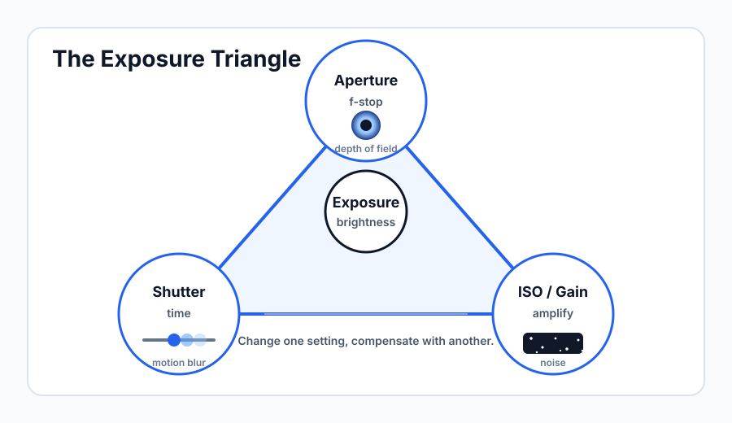

The Exposure Triangle
Learning Objectives
- Explain how aperture, shutter speed, and ISO each affect exposure.
- Describe the secondary effects of each setting beyond brightness (depth of field, motion blur, noise).
- Understand how the three settings interact and compensate for each other.
- Apply practical interview exposure settings for common shooting situations.
- Know when shallow depth of field helps and when it creates problems.
The Three Pillars of Exposure
Every video image is the product of three decisions: how wide you open the lens (aperture), how long each frame is exposed to light (shutter speed), and how sensitive the sensor is told to be (ISO or gain). Together these are called the exposure triangle. Change one and the image gets brighter or darker. The skill of exposure is understanding not just how bright the image gets, but what else changes — because each setting carries side effects that directly affect the look and quality of your footage.

Aperture
The aperture is a physical diaphragm inside the lens that opens and closes, much like the pupil of an eye. A wide opening lets in more light; a narrow opening lets in less. Aperture is measured in f-stops: f/1.4, f/1.8, f/2.8, f/4, f/5.6, f/8, and so on. The numbering is counterintuitive — a lower f-number means a wider opening and more light, while a higher f-number means a smaller opening and less light.
The critical side effect of aperture is depth of field — how much of the scene, from front to back, appears in focus at once. A wide aperture like f/1.8 produces shallow depth of field: your subject is sharp but the background blurs into soft, out-of-focus shapes. This "bokeh" look is popular in narrative film and interview work because it isolates the subject from a potentially distracting background. A narrow aperture like f/8 produces deep depth of field: nearly everything from near to far is sharp simultaneously.
Depth of field is also affected by focal length and subject distance. A long telephoto lens at f/5.6 can still produce a very shallow depth of field, while a wide-angle lens at f/2.8 will show more of the scene in focus. Understanding this interaction becomes important when you start working with different lenses.
Why Wide Open Is Not Always Better
Shooting at the widest aperture your lens allows seems appealing — more light and a beautiful background blur. But extremely shallow depth of field creates real problems in production. If your subject moves even slightly toward or away from the camera, they slide out of the narrow plane of focus. At f/1.4 or f/1.8, a subject tilting their head a few degrees can shift their eyes out of focus. For interview work, f/2.8 to f/4 usually gives a flattering separation from the background while keeping the entire face sharp even with small subject movements. Use f/1.4 and f/1.8 deliberately, not as a default.
| Aperture | Light | Depth of Field | Common Use |
|---|---|---|---|
| f/1.4–f/1.8 | Very high | Extremely shallow | Low light, deliberate bokeh |
| f/2.8 | High | Shallow | Interviews, portraits |
| f/4–f/5.6 | Moderate | Moderate | Group shots, run-and-gun |
| f/8–f/11 | Low | Deep | Bright exterior, landscapes |
Shutter Speed
The shutter opens for a fraction of a second to expose each frame to light, then closes before the next frame begins. Faster shutter speeds (1/500, 1/1000) mean each frame is exposed very briefly, freezing motion sharply. Slower shutter speeds (1/30, 1/60) mean each frame is exposed longer, allowing moving subjects to blur across the frame.
In video, you are not looking for frozen motion — you want a specific, natural-looking amount of motion blur that makes the footage feel organic to the human eye. This is controlled by the 180-degree shutter rule, which is covered in detail in the next lesson. The short version: set your shutter speed to approximately double your frame rate. If you are shooting at 24fps, use a shutter speed of 1/50 (the closest available to 1/48). At 30fps, use 1/60. This produces the motion blur that audiences have come to associate with cinematic video.
Because shutter speed is essentially locked to frame rate in video production, it is not a tool you use to control exposure in the same flexible way a photographer might. You choose your frame rate, the shutter speed follows, and then you use aperture and ISO to get your brightness right.
ISO and Gain
ISO (sometimes called gain in video cameras) is an electronic amplification of the signal coming off the sensor. A low ISO like 100 or 400 means the signal is barely amplified — you get a clean, smooth image. A high ISO like 6400 or 12800 means the signal is amplified aggressively — and amplification always amplifies imperfections along with signal, producing visible noise: random specks of color and brightness scattered through the image, especially in shadow areas.
Different cameras have very different noise performance. A modern full-frame mirrorless camera might produce clean footage at ISO 3200 or higher. An older crop-sensor camera might show unacceptable noise above ISO 800. You need to know your camera's acceptable ISO ceiling by testing it in controlled conditions before you need to rely on high ISO in the field.
When testing your camera's ISO performance, record a scene with visible shadow areas at ISO 400, 800, 1600, 3200, and 6400. Review the footage on a large monitor at 100% magnification. Find the highest ISO where you find the noise acceptable — that is your usable ceiling for professional work.
How the Triangle Works Together
The three settings are connected: if you narrow the aperture to get more depth of field, the image gets darker, so you must raise ISO or slow the shutter to compensate. If you move to a darker room and need more light, you can open the aperture, raise ISO, or — but only within the constraints of the shutter rule — slow the shutter. Every change to one setting creates pressure on the others.
In practice, a useful hierarchy for video is: set your shutter speed first (it follows from frame rate), then choose your aperture for the depth of field you want, then adjust ISO to get the brightness right. ISO is the last resort because it introduces noise, but modern cameras handle it well enough that using ISO 800 or even 1600 to get the shot is almost always preferable to a badly exposed image at ISO 100.
Practical Interview Settings
For a typical indoor interview at 24fps: start with shutter at 1/50, aperture at f/2.8 or f/4, and ISO at your camera's native base (often 800 or 1600 for Sony cameras, 400 for Canon). Adjust ISO up or down to hit proper exposure, then add or remove light from the scene if ISO is creeping too high. This workflow gives you a reliable starting point you can apply quickly on location.
Beginners often crank the aperture all the way open to let in maximum light and then fight with noise by raising ISO anyway. If you are in a dark room, it is almost always better to add practical light (a lamp, a small LED panel) than to push ISO past its usable limit. Noisy footage from high ISO is often unfixable in post, but fixing a dark shot with lights is quick and professional.
You are shooting an interview at f/1.8 and your subject's eyes keep going slightly out of focus when they move. What is the most appropriate adjustment?
What is the primary drawback of raising ISO to brighten your image?
Key Takeaways
- Aperture, shutter speed, and ISO all affect brightness — but each also carries important side effects that affect the look and quality of the image.
- Aperture controls depth of field: lower f-numbers mean wider openings, more light, and shallower focus. Higher f-numbers mean smaller openings, less light, and deeper focus.
- In video, shutter speed is largely determined by the 180-degree shutter rule — it is set to approximately double the frame rate and is not used as a primary exposure control.
- ISO amplifies the sensor signal but also amplifies noise. Use the lowest ISO that gives you acceptable brightness, and know your camera's practical noise ceiling.
- The practical workflow: set shutter (from frame rate), then aperture (for depth of field), then ISO (to hit brightness). Add light if ISO is climbing too high.